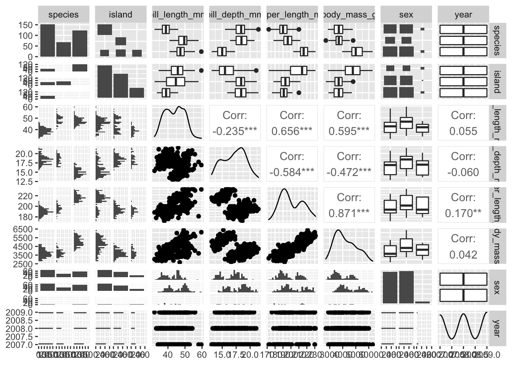
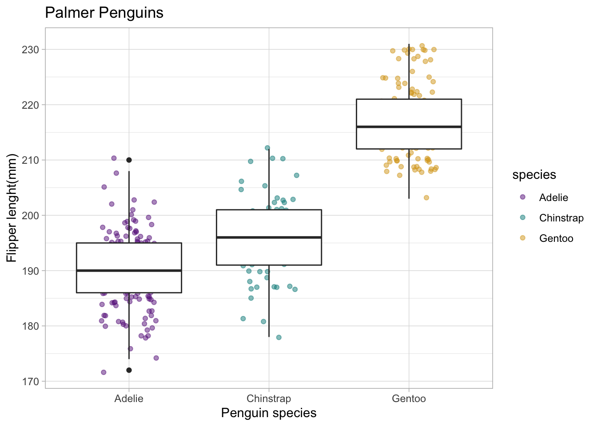
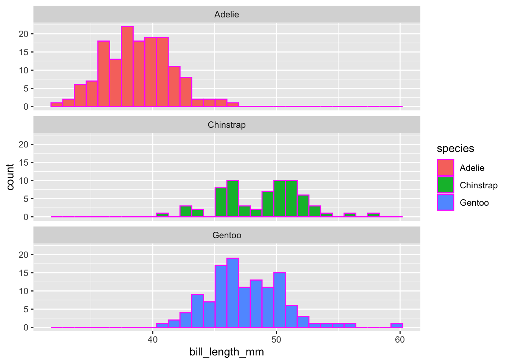

Day 4 Exploring Data
Exploratory Data Viz
- echo: don’t show me the code only show me the output
- Check out data a bit:
#| echo: false
2 + 10[1] 12Skim()
# A good start for summary statistics
skim(penguins)| Name | penguins |
| Number of rows | 344 |
| Number of columns | 8 |
| _______________________ | |
| Column type frequency: | |
| factor | 3 |
| numeric | 5 |
| ________________________ | |
| Group variables | None |
Variable type: factor
| skim_variable | n_missing | complete_rate | ordered | n_unique | top_counts |
|---|---|---|---|---|---|
| species | 0 | 1.00 | FALSE | 3 | Ade: 152, Gen: 124, Chi: 68 |
| island | 0 | 1.00 | FALSE | 3 | Bis: 168, Dre: 124, Tor: 52 |
| sex | 11 | 0.97 | FALSE | 2 | mal: 168, fem: 165 |
Variable type: numeric
| skim_variable | n_missing | complete_rate | mean | sd | p0 | p25 | p50 | p75 | p100 | hist |
|---|---|---|---|---|---|---|---|---|---|---|
| bill_length_mm | 2 | 0.99 | 43.92 | 5.46 | 32.1 | 39.23 | 44.45 | 48.5 | 59.6 | ▃▇▇▆▁ |
| bill_depth_mm | 2 | 0.99 | 17.15 | 1.97 | 13.1 | 15.60 | 17.30 | 18.7 | 21.5 | ▅▅▇▇▂ |
| flipper_length_mm | 2 | 0.99 | 200.92 | 14.06 | 172.0 | 190.00 | 197.00 | 213.0 | 231.0 | ▂▇▃▅▂ |
| body_mass_g | 2 | 0.99 | 4201.75 | 801.95 | 2700.0 | 3550.00 | 4050.00 | 4750.0 | 6300.0 | ▃▇▆▃▂ |
| year | 0 | 1.00 | 2008.03 | 0.82 | 2007.0 | 2007.00 | 2008.00 | 2009.0 | 2009.0 | ▇▁▇▁▇ |
GGally:: ggpairs()

Jitterplot
Flipper Length by Species
Determine something from distribution without hiding data in summary statistics
alpha = transparency
width =
ggplot(data = penguins, aes(x = species, y = flipper_length_mm)) + geom_jitter(width = 0.2, alpha = 0.5, aes(color = species)) + geom_boxplot() + theme_light() + scale_color_manual(values = c("darkorchid4", "cyan4", "goldenrod")) + labs(x = "Penguin species", y = "Flipper lenght(mm)", title = "Palmer Penguins")Warning: Removed 2 rows containing non-finite values (stat_boxplot).Warning: Removed 2 rows containing missing values (geom_point).
Making a histogram
ggplot(data = penguins, aes(x = bill_length_mm)) +
geom_histogram(aes(fill = species), color = "magenta") +
facet_wrap(~species, ncol =1)`stat_bin()` using `bins = 30`. Pick better value with `binwidth`.Warning: Removed 2 rows containing non-finite values (stat_bin).